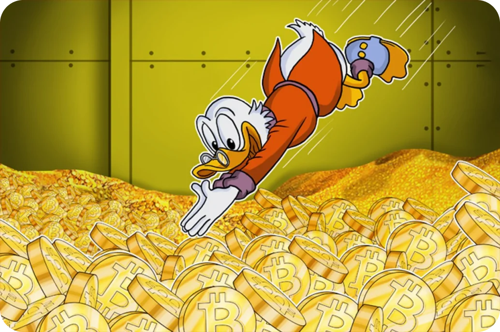
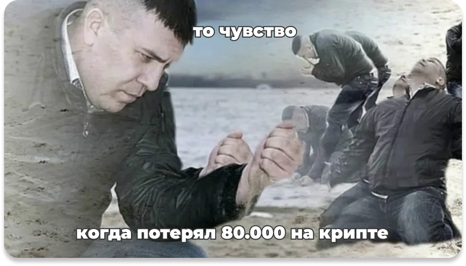

Всё, чем я сейчас поделюсь, уже сделало меня обладателем 60 млн рублей, со стабильным крипто-портфелем, который продолжает мне приносить доход.
Поэтому мне не жалко поделиться этим с вами, своё я уже заработал.
То, чем я собираюсь поделиться с вами, сработает:
Я постараюсь объяснить, как выбраться из этих рамок с помощью простого алгоритма моей работы с криптой, который дает стабильный доход и позволит вам жить так, как вы хотите, а не так, как позволяют условия!
СОВЕТ!
Если вы хотите получить реальную пользу от данной статьи возьмите чай/кофе и печеньки, усаживайтесь поудобнее и уделите 30 минут для прочтения этой статьи, поверьте оно того стоит!Деньги небольшие, но для поддержания штанов хватало, плюс были отличные чаевые. Примерно за год, я смог накопить около 100 тысяч рублей, которые я планировал отложить на свое обучение.
Тогда я, естественно, даже и не подозревал что меня ждет. В один из дней я прочел статью про загадочную криптовалюту и биткоин, который вырос за 2016 год в 2 раза! И я, изучив эту статью, начал интересоваться криптовалютой.
Я собирал по крупицам хоть какую-то информацию, которая дала бы мне большее понимания о крипте. Но находить действительно стоящую информацию было не так легко.
Читая, невероятные истории, как люди покупали биткоин, еще в далеком 2013 за 100$ и через время, становились миллионерами, не давали мне покоя.
Я хотел найти уникальную формулу: как когда и где надо быть, чтобы добиться таких же результатов
НО на тот момент я не знал
про крипту почти ничего!

Я просто хотел получить такой же результат, как и везунчики из статей и всё!
Тогда, я сам придумал свой идеальный ПЛАН действия, который как я думал сделает меня Скрудж Макдаком в мире крипты здесь и сейчас.План - “Капкан”, как я называю его сейчас. Ведь только потом, осознав свои ошибки я понял, что так не надо было делать.
А план то был до гениальности простой:
Слушать всех “экспертов” подряд и делать то, что говорят и миллионы не заставят себя ждать.Ведь один кричал: “Покупай эту монету, она идет в рост!!”
Другой убеждал: “Вкладывай в этот проект и получи х300 прибыли!”
И таких было +100500 советов, которые сподвигли меня накупить всякой чепухи в свой криптопортфель на 100 тысяч. (те 100 тыс, которые я благополучно откладывал на учебу).
Я думал, что вложив 100 тысяч сегодня, я быстренько получу миллион завтра, в крайнем случае через неделю. И закрою учебу, и съезжу на отдых, и всё будет классно. И в этом была главная ошибка.
Наслушавшись псевдо-экспертов, купленные мной монеты, начали сдуваться одна за другой.
Представляете, я уже мечтал как вывожу х300 прибыли и улетаю загорать на Бали.
Открываю биржу и вижу не Бали, а то, что меня НА… учила жизнь больше, никогда не слушать таких горе советчиков и серьезно подходить к анализу проектов в которые я вкладываю деньги.
На фоне того, что почти все криптопроекты, в которые я вложил деньги сдувались, я решил сохранить хоть что-то и вывел около 20 тысяч.
Все думал, что сохранил хотя бы 20к и то молодец.
С этой мыслью я забил на крипту и перестал следить за ней. Мысли о том, что нужно искать деньги за учебу — не давали мне покоя, заставляя жалеть, что я вообще ввязался в этот криптолохотрон.
Через пару недель я получил второй криптоурок от жизни.
Назовем его “поспешишь — людей насмешишь”
Помните те 20 тысяч которые я вывел? Так вот, через 3 недели, стоимость нескольких монет, которые я тогда купил резко увеличилась в 1,5-2 раза!
По моим подсчетам, если бы я не вывел свои сбережения, я бы получил порядка 80-120 тысяч чистой прибыли! За 3 недели!
Даже с учетом потери 80к!
3, 2, 1… АААААААА
Поняв это, я начал орать как сумасшедший! Получается, я два раза потерял деньги. Хотя мог получить больше чем вложил. Заплатить за учебу и потратив прибыль от вложенных средств на свои хотелки о которых давно мечтал. Сбавив эмоции я успокоился.
Но для начала, нужно научиться делать это правильно, а не слушать первых попавшихся людей и свои эмоции.
Тогда я решил эти 20к залить снова на биржу. Четко осознавая, что эти деньги я точно не потеряю. А буду только приумножать.
Время шло, я набирал опыт и начинал более осознанно подходить к работе с криптовалютой , анализируя ситуацию на рынке прежде чем что-то покупать.
Вот вы, например, если будете покупать машину — не возьмёте первую попавшуюся, потому что сосед сказал что она хорошая и надо брать. Вы промониторите цены, марки, приедете, посмотрите и взвесите своё решение. Так и с криптой — она не терпит импульсивных решений.
Плюсы, сменяли минусы...
Где-то я зарабатывал, где-то терял.
У меня был опыт, но не было четкого понимания как сделать так, чтобы капитал стабильно увеличивался.
Либо я сам продолжу изучать крипту. Потрачу время, изучая кучу лишней информации не получая желанной прибыли,и буду топтаться на одном месте.
Либо я найду человека, который даст мне пошаговый алгоритм действий в крипте. Следуя которому, я гарантированно смогу получать стабильную прибыль на крипто бирже.
К сожалению, тогда было сложно найти человека, который был бы полезен и смог рассказать детали успешных сделок. Ведь не каждый хотел делиться своим опытом.
Я продолжал искать наставника и изучать крипту своими силами. И Через 2 месяца, мне удалось заработать на горящую путевку и уехать в отпуск, чтобы хоть чуть-чуть отдохнуть.
Где и случилась судьбоносная встреча, которая перевернула мой мир на “до” и “после”.
Мне нужен был реальный практик, который откроет мне глаза!
Я после обеда вышел к бассейну и устроившись на лежак, начал смотреть какой-то анализ очередного крипто-проекта. Парень с соседнего шезлонга сказал, что это скам проект и сдуется через 3-4 дня.
Каково было мое удивление, когда этот проект сдулся через 2 дня!
Я понял, что тот человек, явно или разбирается в крипте, либо он гость из будущего. Ведь после его слов я передумал вкладываться в этот проект, сохранив тем самым свои деньги.
Я бегал по отелю в поисках того парня, надеясь что он еще не уехал.
Когда я его нашел, то очень обрадовался этому, сходу поблагодарив его за столь ценный совет и пригласил на ужин, чтобы получше с ним познакомится и по расспрашивать про крипту.
За ужином, я засыпал его всякими вопросами по крипте, от которых порой ему становилось смешно. Он к тому моменту уже имел стабильную прибыль и отлично разбирался в стратегиях и уловках крипторынка.
Все оставшееся время отпуска, я ходил за Артуром попятам.
Я записывал все, что он говорил.
За это время я получил столько новых знаний, которые абсолютно поменяли мое представление о работе с криптой.
Все, что я делал до этого оказалось вершиной айсберга и на деле я допускал 60% ошибок и только 40% того, что давало хоть какой-то результат. Я понял, что хочу свести свои ошибки к минимуму и для этого мне нужен был опыт человека, который сидел передо мной.
Я начал слушать только своего наставника в лице Артура! Поменяв, по его рекомендации, стратегию и анализ который я использовал.
Внедрил пару его советов в свои стратегии, которые позволили мне сделать 180$ за 3 дня, учитывая что это пол моей зарплаты в кофейне
Это был мой личный успех, который я помню до сих пор!Чем больше я менял правила игры, моделируя и подстраивая условия под себя, тем легче мне становилось извлекать прибыль из ситуации на рынке.
Кошелек ожил и начал стремительно расти вверх, принося прибыль, которую я заново инвестировал, увеличивая свой крипто портфель.
Через пол года я уже спокойно мог выбрать проект, который по анализу принесет деньги.
1х комнатная квартира за полгода и ноль усилий (ну если только что бы зарегать кошелек и купить монету).
По прошествию 5 лет я часто анализировал ту ситуацию когда потерял 80к, думал как бы я поступил в данный момент.
С теми знаниями, что есть у меня сейчас, я бы стал миллионером гораздо раньше, но все приходит с опытом.
Я был эмоционален. Эмоции и инвестиции ходят разными путями, как показал мой пример, поддавшись страху и эмоциям потерять остатки денег, я все вывел. Потеряв при этом еще больше.
Терпение и выдержка, лучшие друзья каждого новичка в мире криптовалют. Строгий план и неизменная стратегия торговли поможет избежать подобных проблем как случилось со мной.
Я хотел быстро поднять денег, не занимаясь анализом и подобной ерундой(как я думал на тот момент)
Крипта это не про спешку. Если хочется быстрых денег — то вам дорога к букмекерам или в казино. Но все мы знаем, кто там победитель и это явно не вы.
Чтобы зарабатывать на крипте, нужно внимательно изучить всю техническую информацию о монете, это поможет в дальнейшей практике и в работе с биржей.
Я тупо не знал, откуда взять правдивую информацию из мира криптовалют кому можно доверять, а кто просто льет воду пытаясь развести на деньги.
В то время не было не то, что курсов по крипте, не было в принципе достоверного источника, на который можно было положиться. всё собиралось на личном опыте по крупицам.
После 5 лет в крипте, я с радостью плачу десятки тысяч только за консультации от ТОП-специалистов криптомира, понимая, что не просто так отдаю им деньги.
Я покупаю их время, которое они потратили на обучение, которое мне не нужно тратить на ошибки и потерю денег, я сразу могу применить чужие знания и опыт, разом умножив свой капитал.
НО, каждый раз в шаге от успеха, у многих людей появляется страх и в голове возникают миллионы сомнений, главные из них:
- Вдруг прогорю, не получится, нарвусь на мошенников
Есть разные стратегии заработка “рисковые” и “безрисковые”.
Всё зависит от ваших знаний и целей.
Главное руководствоваться правилом:
Слушайте, сколько было сделано финансовых пирамид на рублях или долларах — просто бесконечное множество.
Пирамиды схлопывались, а валюта оставалась.
Ведь когда я потерял первые деньги мне тоже было страшно. Я бы даже сказал, что у меня была паника. Но трезво оценив ситуацию, потеря была связана только с моим незнанием. Ведь если бы я с самого начала подошёл к крипте с умом – то я сэкономил бы и время и деньги. И возможно сейчас, был бы не миллионером, а миллиардером.
Сейчас вы должны решить для себя:
так ли сильно вами движет страх, чтобы начать что-то новое.
Или вам страшнее получать 20-30 тыс рублей и постоянно тратить их на погашение кредитов, не откладывая на желанный отпуск.
Но я скажу вам, какой страх самый неприятный:
страх упущенной выгодыИ если вы его ощутите его, то там ничего не поможет, там будут только размышления “а если бы тогда начал”, “а если бы тогда я не побоялась, то сейчас уже закрыла бы все свои кредиты”.
Большинство, может сказать:
-Уже поздно заходить в крипту, все что могло вырасти уже - выросло, а сейчас момент упущен и заработать нет не единого шанса.
И эти люди, будут чертовски НЕПРАВЫ, давайте разбираться почему